TL;DR
Feed-forward 3DGS predicts covariances (scale, rotation) that work well at the training resolution — but re-render the same prediction at a higher resolution and holes open.
PaveSplat keeps the analytic surface-aligned frame and learns one identity-initialized rotation residual , so surfels keep paving the surface.
Abstract
We present PaveSplat, a feed-forward Gaussian splatting method that adds a learned residual to the analytic surface-aligned covariance, keeping surfels paving the visible surface across rendering resolutions. Pixel-aligned feed-forward Gaussian splatting predicts one primitive per pixel from a few images in a single pass, and its rendering quality depends on how well these primitives cover the surface. Recent surfel-based methods compute the surface-aligned covariance analytically from predicted depth. However, this covariance has no way to correct the surfel orientation where the depth-derived frame is ill-posed. The surfels then cover the surface loosely; at the training resolution each surfel’s one-pixel minimum footprint covers the gaps, but they show up as holes when the same prediction is re-rendered at a higher resolution. To address this, we keep the analytic covariance as an initialization, with its axes aligned to the surface tangents, and add an identity-initialized unit-quaternion residual that reorients a surfel only where this improves rendering, turning surfels that the analytic frame mis-aims back onto the surface. On RealEstate10K, PaveSplat achieves the best PSNR, SSIM, and LPIPS among single-Gaussian-per-pixel methods at every scale (1×–8×). The native-resolution gain is small; the benefit appears when the same prediction is rendered at higher display resolutions without re-running the network. On zero-shot DL3DV, it leads PSNR within this group at every scale and ranks first or second on SSIM/LPIPS. A coverage-hole analysis shows fewer uncovered pixels than both baselines under high-resolution re-rendering.
The problem: holes at high resolution
SurfSplat‡
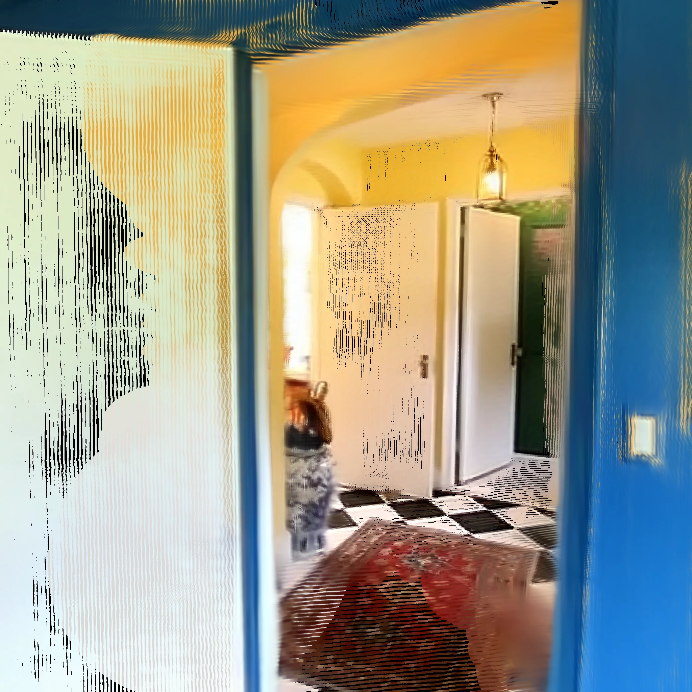
PaveSplat (ours)
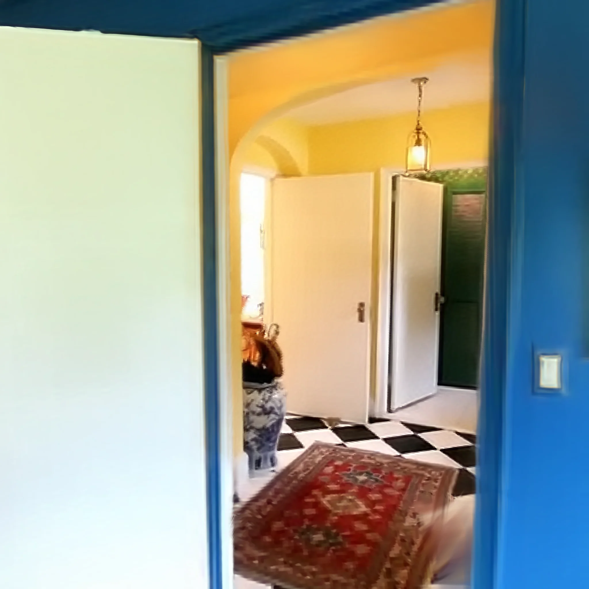
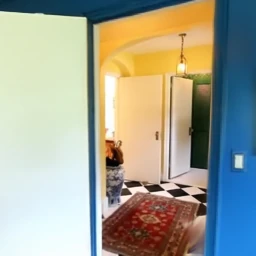
- Most feed-forward 3DGS methods predict pixel-aligned Gaussians — typically one per pixel — from a few input views in a single pass.
- At 1×, each surfel’s one-pixel minimum footprint hides the gaps between loosely placed surfels.
- Re-render the same prediction on a 2×–8× denser grid and the gaps show up as holes.
- Root cause: depth sets each surfel’s size from its pixel footprint, but that size only covers the surface if the orientation is right — and analytic surfels have no learned orientation to fix mis-aimed ones at depth edges, thin structures and grazing surfaces.
Method: a correctable surface-aligned covariance
Three ways to cover a surface with surfels
(a) Fully learned
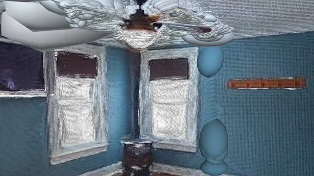
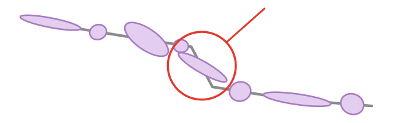
(b) Analytic
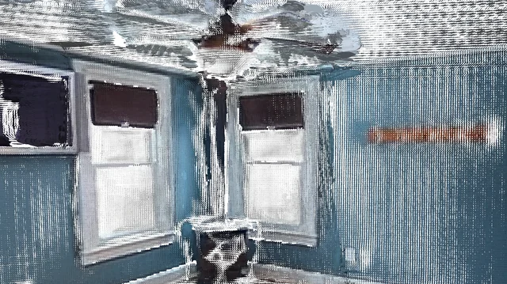
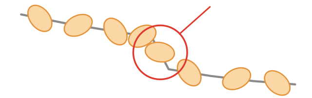
(c) PaveSplat
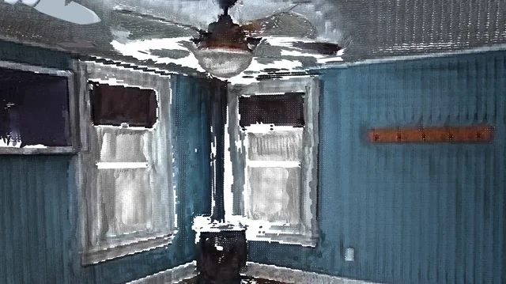
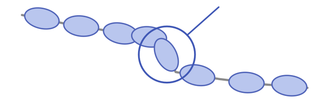
- Predicted depth
-
Surface-aligned prior
tangent-aligned frame - In-plane scale multipliers Residual reorientation identity-initialized
- Final covariance
- Rasterizer (unchanged)
- Surface-aligned prior: in-plane axes follow the measured tangents, so the anisotropic radii act where they were measured.
- Residual reorientation : the only new learned covariance parameter — 9,512 parameters (<0.05% of the model), +2% encoder time.
- Identity-initialized: training starts exactly at the analytic frame and rotates a surfel only where rendering asks for it.
Results: robust high-resolution re-rendering
RealEstate10K — PSNR vs. render scale
- best PSNR, SSIM & LPIPS among single-Gaussian-per-pixel methods at every scale
- 1×–8×
Zero-shot DL3DV (trained on RealEstate10K)
PaveSplat leads PSNR among single-Gaussian-per-pixel methods at every scale. Zero-shot ScanNet: slightly behind at 1× (−0.10 dB), ahead at 8× (+2.511 dB).
Full Table 1
More qualitative results (main Fig. 3, supp Fig. 2)
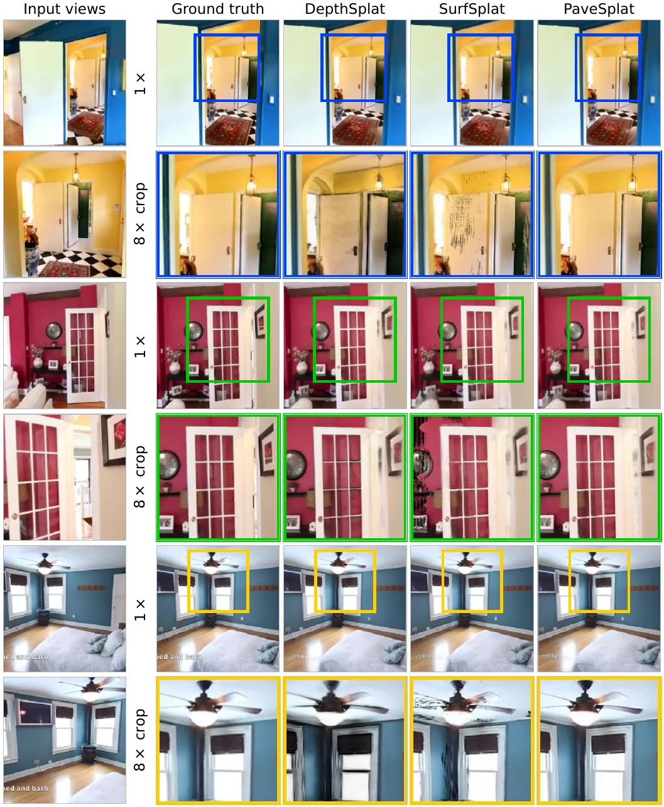
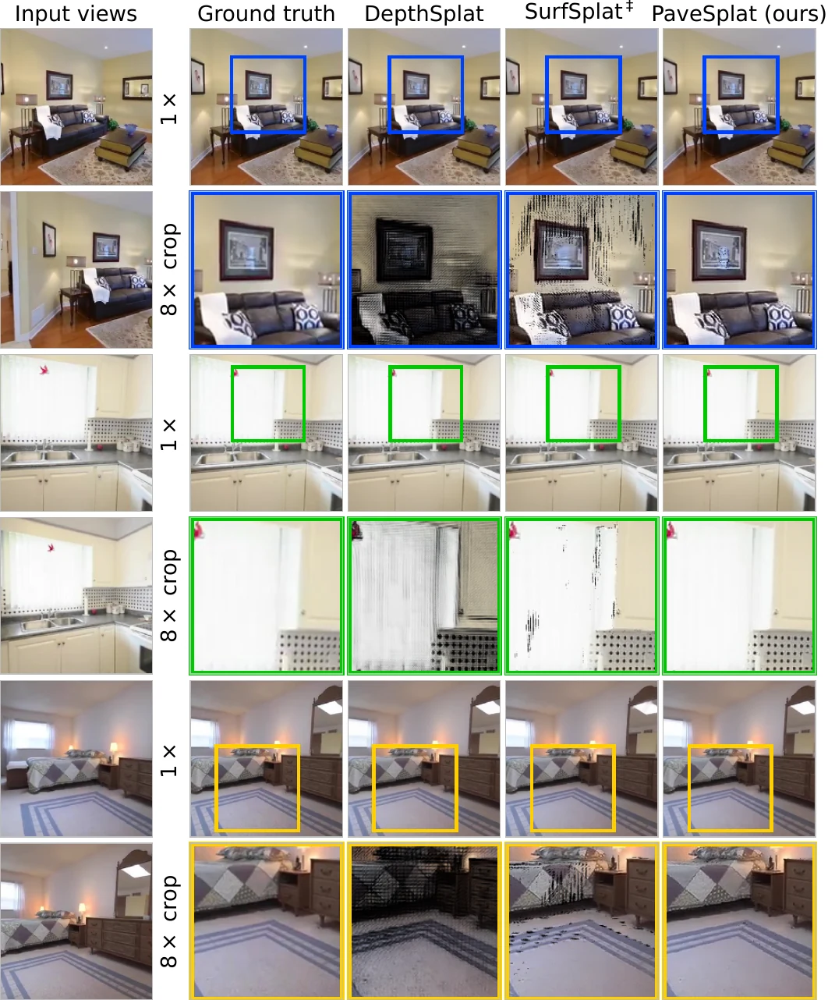
Source tiles in these composites are 178 px wide; they are not upscaled beyond their native size.
Why it works: mechanism evidence
Fewer coverage holes when re-rendered
Design path (identical recipe per row)
| Configuration | ↓ | holes 8× ↓ | PSNR 8× ↑ |
|---|---|---|---|
| SurfSplat‡ (same recipe, normal-only frame) | 0.667 | 1.00% | 23.342 |
| + tangent-aligned frame | 0.580 | 1.11% | 23.850 |
| + residual (ours) | 0.585 | 0.78% | 24.266 |
is used — it does not collapse to identity
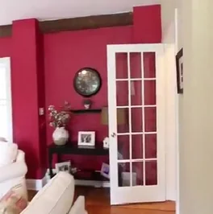
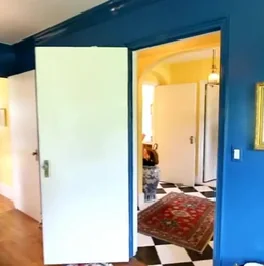
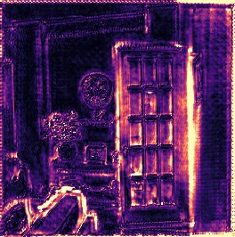
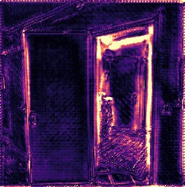
Mean residual angle 0.160 rad (≈9.1°), p99 1.073 rad (≈61.5°), concentrated at depth discontinuities and grazing surfaces.
top: input · bottom: residual angle ||
Per-scene medians (main Fig. 4a)
Coverage data: medians and means
BibTeX
@inproceedings{kim2026pavesplat,
title = {PaveSplat: Resolution-Robust Feed-Forward Gaussian Splatting with Residually Corrected Surface-Aligned Covariances},
author = {Janghun Kim and Hyun-Cheol Kim and Eunbin An and Myeonghun Oh and Hyon-Gon Choo},
booktitle = {Proceedings of the Asian Conference on Computer Vision (ACCV)},
year = {2026},
eprint = {2611.26045},
archivePrefix = {arXiv},
primaryClass = {cs.CV}
}